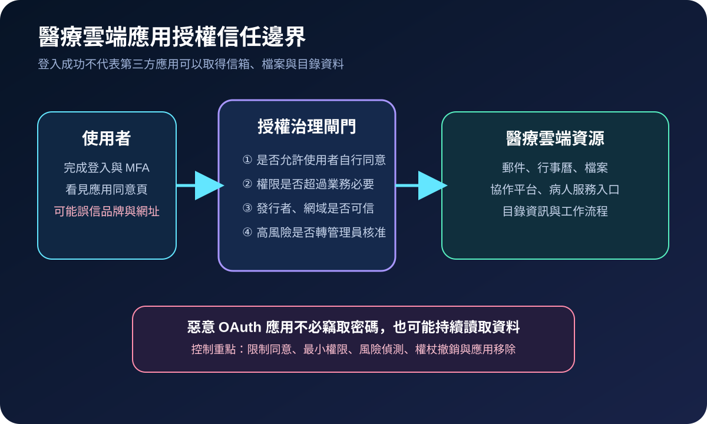
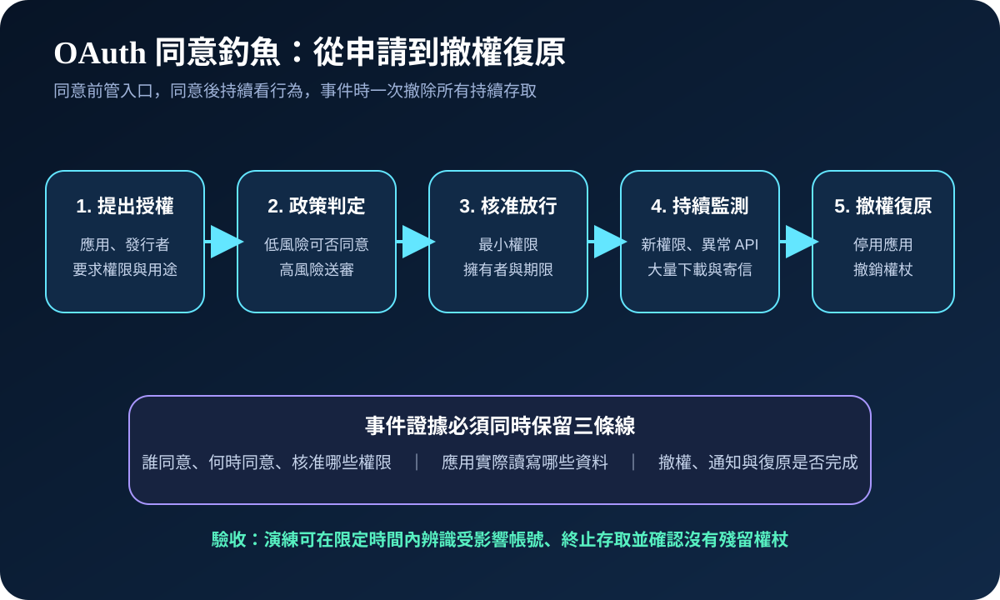
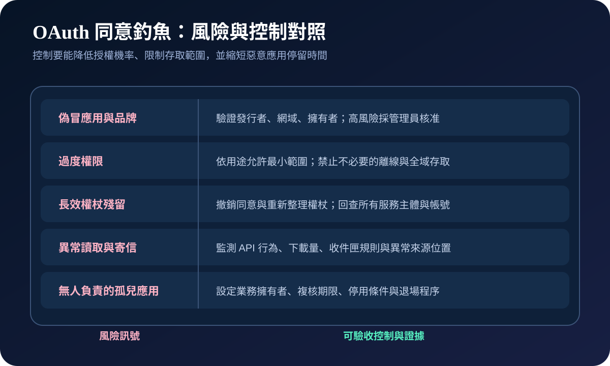

醫療資安國際觀察 · 2026-11-15
醫療雲端授權如何防止惡意應用接管：從同意釣魚到撤權復原
作者：Dr. William｜醫療資訊與資安治理實務工作者
OAuth 同意釣魚利用看似正常的雲端登入與授權畫面，誘使使用者允許惡意應用讀取信箱、檔案、行事曆或目錄資料。密碼與多因素驗證可能都沒有被破解，但攻擊者仍可透過已核發的權杖持續存取資料。
名詞解釋：登入、同意與權杖是三件事
OAuth讓應用在不取得使用者密碼的情況下，依核准範圍存取資源；同意是使用者或管理員允許特定權限；存取權杖是應用呼叫 API 的憑證，重新整理權杖可用來取得新的存取權杖。風險不只在登入頁真假，也在應用身分、要求權限、同意主體及權杖生命週期。
國際現況與適用邊界
美國 FBI 於 2026 年 9 月警示，攻擊者使用 Microsoft 365 OAuth 授權流程，誘使目標執行命令並將裝置授權給攻擊者控制的應用。Microsoft 的企業應用指引將未驗證發行者、要求高影響權限及異常 API 行為列為治理重點；NIST 數位身分聯邦指引與 CISA 安全雲端應用基線，則提供信任、授權與雲端組態治理的通用參考。這些是美國執法警示、聯邦技術指引與特定雲端平台方法，不是台灣醫療機構的直接法定義務。
台灣適用原則：可將國際攻擊手法轉成院內 SaaS 與雲端身分治理要求；實際資料分類、個資事件判定、通報、保存期限及供應商責任，仍須依台灣法規、主管機關要求、契約與院內程序確認。
規劃：先建立應用與授權清冊
治理範圍應包含使用者同意、管理員同意、服務主體、委派權限、應用程式權限、擁有者、發行者、用途、可存取資料、最後使用時間及退場條件。驗收指標可設定為：高風險權限全數經管理員核准、每個應用均有業務與技術擁有者、異常授權可在限定時間內停用，且能回查受影響帳號與資料。
實作：同意前限制，同意後持續驗證
- 限制入口：關閉不必要的使用者自行同意，僅允許低風險權限或核准發行者。
- 管理員審查：核對業務必要性、權限範圍、資料類型、發行者、回呼網域、擁有者及期限。
- 最小授權：避免離線存取、全信箱、全檔案或全目錄等超過用途的權限。
- 持續監測：偵測新應用、新權限、大量 API 讀取、異常寄信、收件匣規則與陌生來源。
- 事件撤權：停用應用、撤銷同意與權杖、移除服務主體、重設受影響工作階段並保存時間線。
- 復原驗證：確認惡意存取停止、沒有殘留權杖，必要時進行資料外洩與臨床影響評估。

風險：只改密碼可能無法終止存取
常見失敗包括只教育使用者辨識假登入頁、允許任何已登入者自行同意、只看應用名稱不看發行者與權限、事件時只改密碼、未撤銷重新整理權杖，以及專案結束後留下無人負責的應用。控制必須同時覆蓋授權入口、最小權限、行為偵測、撤權與退場。

可執行清單
- 是否限制一般使用者對未驗證或高風險應用自行同意？
- 每個第三方應用是否有用途、擁有者、權限、資料範圍與期限？
- 能否辨識新增權限、大量 API 讀取、異常寄信與陌生來源？
- 事件劇本是否同時撤銷同意、權杖、服務主體與工作階段？
- 能否回查應用存取過哪些信箱、檔案、目錄與協作資料？
- 離職、專案結束或長期未使用時，應用是否自動進入退場審查？
- 撤權演練是否確認沒有殘留權杖，並完成個資與臨床影響分流？
來源
- FBI IC3｜Malicious Cyber Actors Use Microsoft Authorization Workflows to Compromise Organizations（發布：2026-09-01；查閱：2026-11-15）
- NIST｜SP 800-63C-4: Federation and Assertions（發布：2025-07；查閱：2026-11-15）
- CISA｜Secure Cloud Business Applications Project（查閱：2026-11-15）
- Microsoft Learn｜Protect against consent phishing（更新：2025-10-09；查閱：2026-11-15）
- Microsoft Learn｜Investigate risky OAuth apps（查閱：2026-11-15）
內容說明
本文依健康台灣深耕計畫相關治理內容整理，並參考 FBI 與 Microsoft 一手資料，說明第三方應用授權、風險偵測、權杖撤銷及復原驗證；不把美國警示或特定雲端平台操作方式視為台灣醫療機構的法定義務，也不取代主管機關規範、個資事件評估、契約或法律意見。